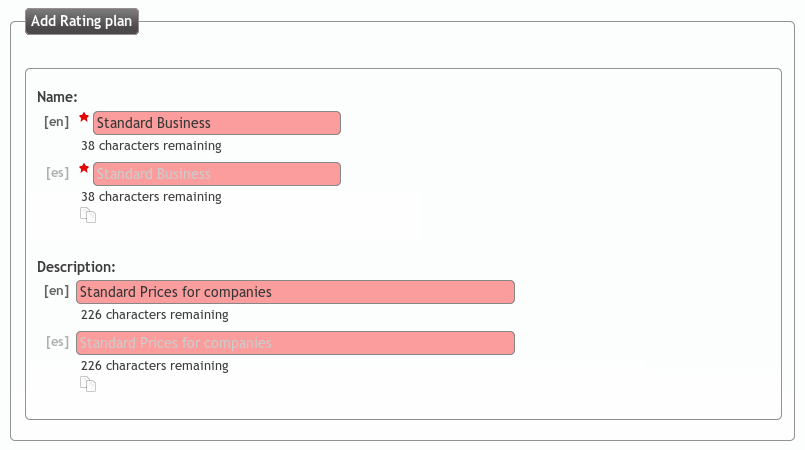
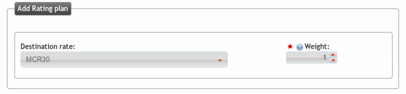
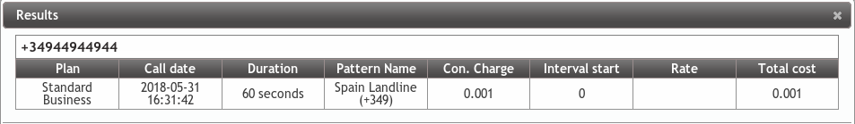
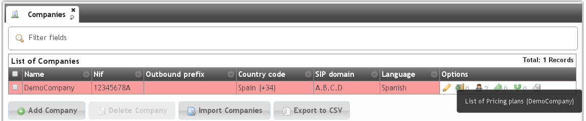
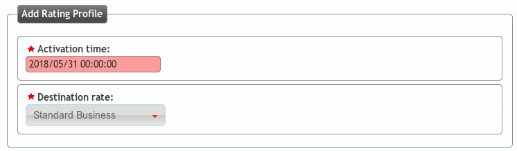

Rating plans¶
Creating a rating plan¶
Destination rates are grouped using Rating plans. This offers the possibility to have base pricing data and customize some destination with different prices.
Create a rating plan:
And then we can add our destination rate:
The metric of the link lets you assign more than one destination rate for a plan, even though some destinations are included in more than one of those destination rates.
Attention
If a given call can be billed with more than one destination rate, it will be billed using the one with lowest metric.
Tip
This allows having a general Destination rate and concrete the price of a specific destination in another destination rate with lower metric (free cell phone calls, for example).
Checking Rating plans
To check the configuration so far we can Simulate a call from the rating plans list.
We introduce the destination number in E.164 format, and we can check that it matches the rating plan we have just created:
Assigning a rating plan to a company¶
A specific rating plan can be linked to multiple companies.
In the section Brand configuration > Virtual PBXs we select the demo company:
The Rating plan have an activation time, and only one can be active for each company.
Simulating a call of a specific company
In this list we can also simulate a call for a given company like we did previously in the rating plan list and check the price it will imply. This way, we can be sure that the configuration is ok.